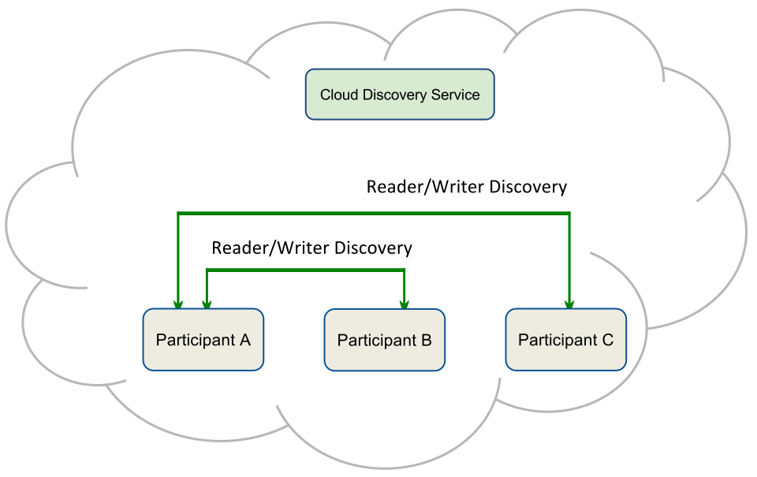

1. Introduction¶
RTI Cloud Discovery Service is a stand alone application needed to deploy Connext DDS applications in dynamic environments where UDP/IP multicast is not available. This is typical of wide area networks or some cloud-based environments where the routers and switches may disable IP multicast forwarding.
DDS has a built-in Discovery Service that allows all DDS applications to automatically detect the presence of other applications and discover the Topics they publish and subscribe along with the associated data types and Quality of Service (QoS).
The built-in discovery service primarily relies on UDP/IP multicast to bootstrap the detection of other DDS applications and learn their network addresses. The use of UDP/IP multicast allows DDS discovery to be completely peer-to-peer. That is, operate without requiring any additional services or brokers. The applications themselves can discover each other directly.
However, if Connext DDS applications run in environments where UDP/IP multicast is not available the builtin (peer-to-peer) discovery is not sufficient. Connext DDS offers two mechanisms to help with those scenarios:
- For static environments where the network addresses of all the applications are known a-priori, you can configure your application to automatically check on these addresses for the presence of other applications. This is accomplished by configuring the Initial Peers.
- For dynamic environments where the network addresses are not known in advance, or in cases where the list is too large or cumbersome to manage, you can leverage RTI Cloud Discovery Service. This external service acts as a reliable “rendezvous” point for Connext DDS applications to learn the presence and network addresses of other DDS applications. This can be accomplished by setting the Initial Peers to include Cloud Discovery Service.
Figure 1.1 Cloud Discovery Service Overview
Figure 1.1 shows a simple representation of the operation of Cloud Discovery Service. It acts as a “relay” service that forwards the bootstrap (participant announcement) messages that allow DomainParticipants to learn about the presence of other DomainParticipants.
1.1. The Basics¶
Cloud Discovery Service operates using the standard Simple Discovery Protocol (SDP) [1]. In SDP, DomainParticipants initially announce their presence to all the specified Initial Peers. These participant announcements contain the necessary information for other DomainParticipants to discover their presence and bootstrap communications. These messages are also used to maintain participant liveliness.
Figure 1.2 Cloud Discovery Service forwards Participant Announcement messages
Cloud Discovery Service listens for participant announcements to dynamically learn about the current list of DomainParticipants, their DDS domain IDs, and their network adresses.
Figure 1.2 illustrates that each DomainParticipant includes a Cloud Discovery Service instance in its Initial Peers. Hence, the DomainParticipant will send participant announcements to Cloud Discovery Service, which will forward those announcements to the list of DomainParticipants it knows about, enabling them to initiate the discovery process among them.
Figure 1.3 DomainParticipants exchange Participant Announcement messages
Figure 1.3 illustrates that once a DomainParticipant discovers the presence of another one (via the forwarded message from Cloud Discovery Service) it sends its Participant Announcement messages directly. This step is the same as if the DomainParticipant had included the other DomainParticipant in its Initial Peers or was using multicast to announce its presence. These messages are also used to maintain participant liveliness.
Figure 1.3 shows that once a DomainParticipant receives an announcement from another one forwarded by Cloud Discovery Service, it can directly send participant announcements. This step is the same as if the DomainParticipant included the other DomainParticipant in its Initial Peers or used multicast to announce its presence.
Figure 1.4 Domain Participants exchange Endpoint Discovery messages
Figure 1.4 illustrates that once a DomainParticipants know about each other, they exchange Endpoint discovery information. That is, information on the DataWriters and DataReaders each has. This step is unaltered by the presence of Cloud Discovery Service.
Direct benefits of Cloud Discovery Service:
- Dynamic discovery remains possible even if there is no multicast available without the need to anticipate or maintain list of peers.
- Cloud Discovery Service integrates seamlessly in a DDS environment. Because it operates at the RTPS [2] level, RTI Connext applications do not need any special behavior or protocol. They just need to configure their Initial Peers to contain the location where Cloud Discovery Service is running. Since this is all configurable at runtime, there is no need to recompile your application. This implies that Cloud Discovery Service will also work with existing services such as RTI Routing Service, Connext DDS Micro, or with other implementations of DDS-RTPS.
- Discovery remains as a distributed process performed among all the DomainParticipants. This allows you to scale the system dynamically and avoids centralized and bottleneck servers.
For a deeper understanding of discovery, refer to What is Discovery? section in the RTI Connext DDS Users Manual.
1.2. Available Documentation¶
In this manual you can find:
1.3. Paths Mentioned in Documentation¶
This documentation refers to:
<NDDSHOME>This refers to the installation directory for Connext DDS. The default installation paths are:- Mac OS X systems:
/Applications/rti_connext_dds-version - Unix-based systems, non-root user:
/home/your user name/rti_connext_dds-version - UNIX-based systems, root user:
/opt/rti_connext_dds-version - Windows systems, user without Administrator privileges:
<your home directory>\rti_connext_dds-version - Windows systems, user with Administrator privileges:
C:\Program Files\rti_connext_dds-version
You may also see
$NDDSHOMEor%NDDSHOME%, which refers to an environment variable set to the installation path.Whenever you see
<NDDSHOME>used in a path, replace it with your installation path.Note for Windows Users: When using a command prompt to enter a command that includes the path
C:\Program Files(or any directory name that has a space), enclose the path in quotation marks. For example:“C:\Program Files\rti_connext_dds-version\bin\rticlouddiscoveryservice.bat”Or if you have defined the
NDDSHOMEenvironment variable:"%NDDSHOME%\bin\rticlouddiscoveryservice.bat"- Mac OS X systems:
<path to examples>By default, examples are copied into your home directory the first time you run RTI Launcher or any script in<NDDSHOME>/bin. This document refers to the location of the copied examples as<path to examples>.Wherever you see
<path to examples>, replace it with the appropriate path. Default path to the examples:- Mac OS X systems:
/Users/your user name/rti_workspace/version/examples - UNIX-based systems:
/home/your user name/rti_workspace/version/examples - Windows systems:
your Windows documents folder\rti_workspace\version\examples. Where'your Windows documents folder'depends on your version of Windows. For example, on Windows 7, the folder isC:\Users\your user name\Documents; on Windows Server 2003, the folder isC:\Documents and Settings\your user name\Documents.
- Mac OS X systems:
References
| [1] | DDS Simple Discovery Protocol |
| [2] | Real-Time Publish-Subscribe Protocol |